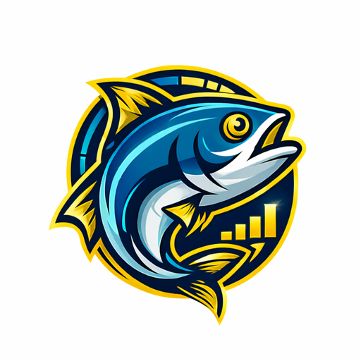

← Back to applications

Catch Master
A smart fishing diary that helps you analyse catches, spots, weather, seasons and session results — so your own data can improve your fishing over time.

A smart fishing diary that helps you analyse catches, spots, weather, seasons and session results — so your own data can improve your fishing over time.